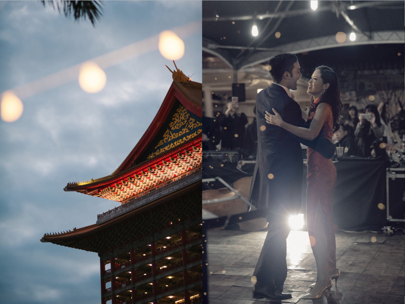
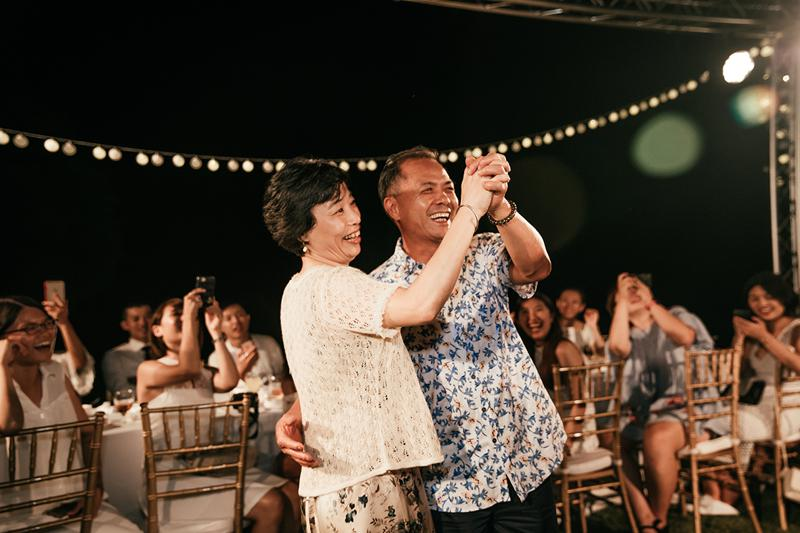
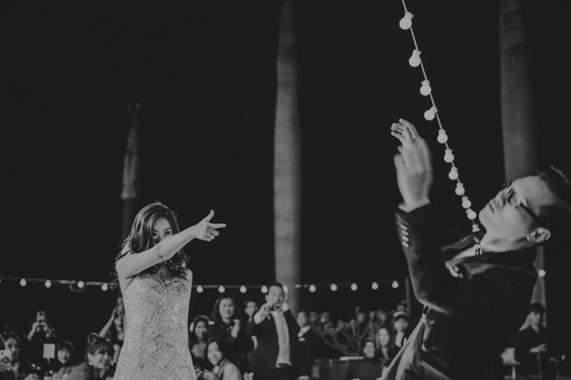
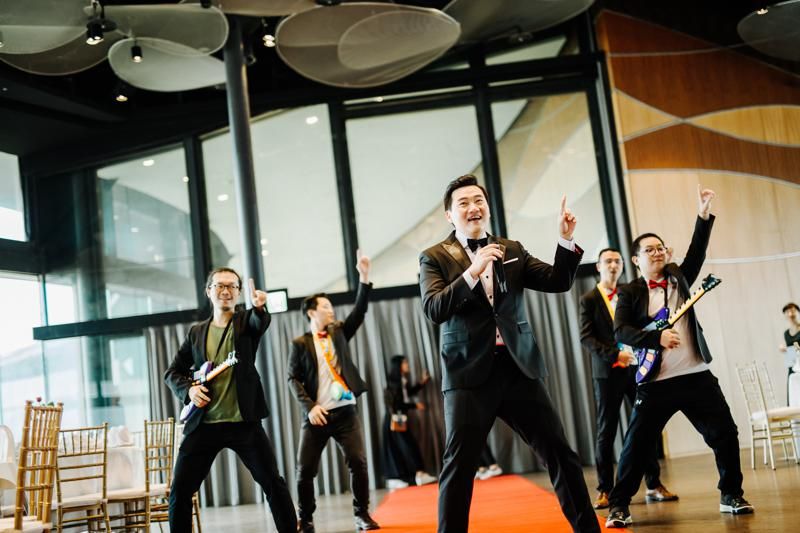
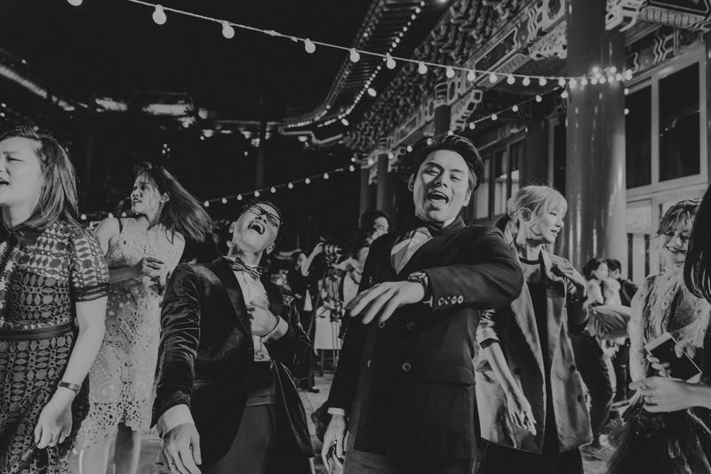

<!DOCTYPE html>
<html lang="zh-TW">
<!-- head 開始 -->
<head>
    <meta charset="UTF-8">
    <meta name="viewport" content="width=device-width, initial-scale=1.0">
    <script src="https://kit.fontawesome.com/8d42bfc726.js" crossorigin="anonymous"></script>
    <link rel="stylesheet" href="https://stackpath.bootstrapcdn.com/bootstrap/4.4.1/css/bootstrap.min.css" integrity="sha384-Vkoo8x4CGsO3+Hhxv8T/Q5PaXtkKtu6ug5TOeNV6gBiFeWPGFN9MuhOf23Q9Ifjh" crossorigin="anonymous">
    <link rel="stylesheet" href="assets/style/all.css">
    <link href="https://fonts.googleapis.com/css2?family=Julius+Sans+One&family=Roboto:wght@100;300;400;500&display=swap" rel="stylesheet">
    <link rel="icon" href="assets/images/layout/header/chr_D_bg.svg" type="image/x-icon">
    <!-- X-UA-Compatible設置IE兼容模式，什麼版本IE 就用什麼版本的標準模式 開始 -->
    <meta http-equiv="X-UA-Compatible" content="IE=edge">
    <!-- X-UA-Compatible設置IE兼容模式，什麼版本IE 就用什麼版本的標準模式 結束 -->
    <!-- 聲明我的 HTML 使用了 XML Friends Network (XFN) 微格式 開始 -->
    <link rel="profile" href="http://gmpg.org/xfn/11">
    <!-- 聲明我的 HTML 使用了 XML Friends Network (XFN) 微格式 結束 -->
    <!-- Safari在讀取網頁時就會知道我們希望這個網頁有原生APP的特性(像是在手機螢幕有自己的icon等等) 開始 -->
    <meta name="mobile-web-app-capable" content="yes">
    <meta name="apple-mobile-web-app-capable" content="yes">
    <meta name="apple-mobile-web-app-title" content="西式婚禮活動，浪漫的婚禮跳舞，First Dance 解析｜DCT Wedding 拾夢西式婚禮">
    <!-- Safari在讀取網頁時就會知道我們希望這個網頁有原生APP的特性(像是在手機螢幕有自己的icon等等) 結束 -->
    
    <title>西式婚禮活動，浪漫的婚禮跳舞，First Dance 解析｜DCT Wedding 拾夢西式婚禮</title>
    <meta name="description" content="沒有舞蹈底子也能在婚禮上擁有 First Dance，舉手投足間展現兩人的默契和浪漫甜蜜，不論是兩人深情對望，或新郎環抱著新娘的畫面，都十分令人稱羨，拾夢的許多新人都會在開舞後，邀請雙方家長共舞">
    <!-- 加上這段標籤跟沒加的道理是一樣的，等於搜尋引擎將正常索引及檢索，指定 -1 代表網頁摘要長度不限 開始 -->
    <meta name="robots" content="index, follow">
    <meta name="googlebot" content="index, follow, max-snippet:-1, max-image-preview:large, max-video-preview:-1">
    <meta name="bingbot" content="index, follow, max-snippet:-1, max-image-preview:large, max-video-preview:-1">
    <!-- 加上這段標籤跟沒加的道理是一樣的，等於搜尋引擎將正常索引及檢索，指定 -1 代表網頁摘要長度不限 結束 -->
    <link rel="canonical" href="http://dctwedding.com/blog_2018-06-08">
    <meta property="og:locale" content="zh_TW">
    <meta property="og:type" content="article">
    <meta property="og:title" content="西式婚禮活動，浪漫的婚禮跳舞，First Dance 解析｜DCT Wedding 拾夢西式婚禮">
    <meta property="og:description" content="沒有舞蹈底子也能在婚禮上擁有 First Dance，舉手投足間展現兩人的默契和浪漫甜蜜，不論是兩人深情對望，或新郎環抱著新娘的畫面，都十分令人稱羨，拾夢的許多新人都會在開舞後，邀請雙方家長共舞">
    <meta property="og:url" content="http://dctwedding.com/blog_2018-06-08">
    <meta property="og:site_name" content="DCT Wedding 拾夢婚顧 西式婚禮 戶外婚禮">
    <meta property="article:modified_time" content="2020-06-26T15:19:33+00:00">
    <meta property="og:image" content="http://dctwedding.com/assets/resized_photo/blog_2018-06-08/西式婚禮活動，浪漫的婚禮跳舞-2.jpg">
    <meta property="og:image:width" content="1200">
    <meta property="og:image:height" content="630">
    <meta name="twitter:card" content="summary_large_image">
    <!-- google-analytics js 開始 -->
    <!-- google-analytics js 結束 -->
    <!-- fb js 開始 -->
    <!-- fb js 結束 -->
</head>
<!-- head 結束 -->

<body>
  <header class="header">
    <nav id="navApp" class="navbar navbar-expand-lg navbar-light bg-yellow fixed-top pt-3 pb-2 pt-md-4 pb-md-3"> <!--fixed-top-->
      <div class="container px-3">
          <a class="navbar-brand d-lg-none" href="index.html">
              
          </a>
          <button class="navbar-toggler" type="button" data-toggle="collapse" data-target="#navbarNavAltMarkup" aria-controls="navbarNavAltMarkup" aria-expanded="false" aria-label="Toggle navigation">
              <span class="navbar-toggler-icon"></span>
          </button>
          
          <div class="collapse navbar-collapse navbar-nav-left" id="navbarNavAltMarkup">
            <ul class="navbar-nav header-nav d-flex align-items-center align-items-lg-end">
                <li class="nav-item mb-lg-0 mb-4">
                    <a class="nav-link text-center d-flex flex-column" href="aboutUs.html">
                        About<span class="">關於我們</span>
                    </a>
                </li>
                <li class="nav-item mb-lg-0 mb-4">
                    <a class="nav-link text-center d-flex flex-column" href="service.html">
                        Service<span class="">服務項目</span>
                    </a>
                </li>
                <li class="nav-item mb-lg-0 mb-4">
                    <a class="nav-link text-center d-flex flex-column" href="portfolio.html">
                        Portfolio<span class="">作品錦集</span>
                    </a>
                </li>
                <li class="nav-item d-none d-lg-block mb-lg-0 mb-4">
                    <a class="navbar-brand" href="index.html">
                        
                    </a>
                </li>
                <li class="nav-item mb-lg-0 mb-4">
                    <a class="nav-link text-center d-flex flex-column" href="blog.html">
                        Story<span class="">婚顧專欄</span>
                    </a>
                </li>
                <li class="nav-item mb-lg-0 mb-4">
                    <a class="nav-link text-center d-flex flex-column" href="feedback_fb.html">
                        Feedback<span class="">新人回饋</span>
                    </a>
                </li>
                <li class="nav-item mb-lg-0 mb-4">
                    <a class="nav-link text-center d-flex flex-column" href="survey.html">
                        Contact<span class="">線上預約</span>
                    </a>
                </li>
            </ul>
        </div>
        
      </div>
    </nav>
  </header>

  <div class="entry-content container" style="text-align: center;">
<h1 class="post-title entry-title mb-4" style="text-align: center;font-size: 1.25rem;">西式婚禮活動，浪漫的婚禮跳舞</h1>
<!-- <p><span style="color: #ffffff;">first dance</span></p>
<p><span style="color: #ffffff;">婚禮舞蹈教學</span></p>
<p><span style="color: #ffffff;">第一支舞</span></p> -->
<p><span style="color: #879460;">| First Dance |</span></p>
<p>誰說一定要有舞蹈底子才能在婚禮上擁有 First Dance</p>
<p>現在有許多新人為了能留下彼此難能可貴的回憶，而主動找我們學舞</p>
<p>畢竟能有個受注目成為主角的機會並不多，當然要好好把握！</p>
<p>小編還要告訴你！如果想讓婚禮增添西式的風味，第一支舞絕對是不可或缺的一環</p>
<p></p>
<p>在證婚儀式過後，新人透過 First Dance 揭開宴會的序幕，是西式婚禮常見的活動</p>
<p>舉手投足間展現兩人的默契和浪漫甜蜜，不論是兩人深情對望，或新郎環抱著新娘纖腰的畫面，都十分令人稱羨！</p>
<p></p>
<p>拾夢的許多新人都會在開舞後，邀請雙方家長共舞</p>
<p>可以是由新娘和新娘爸爸跳、或是新郎和新郎媽媽共舞，當然爸爸、媽媽想一起跳也可以！</p>
<p>想找誰跳就找誰，並沒有制式的規定</p>
<p>畢竟婚禮是你們自己的，想與誰留下難忘的回憶就別愛面子快牽起他的手吧！</p>
<p>小編認為婚宴中跳舞的意義不是在於展現舞藝，而是在過程中，能與愛人、親人、好友能有一個感情交流的機會</p>
<p>更別說是和另一伴完成first dance，這更是讓彼此互相認識、包容、培養默契的一個契機。</p>
<p> </p>
<p><strong>該如何選擇舞蹈的風格？</strong></p>
<p></p>
<p><span style="color: #879460;">-慢舞-</span></p>
<p>最常見的first dance不外乎就是浪漫的華爾滋</p>
<p>在國外，是由新娘與爸爸先共舞，從慢慢舞步中，細細回味這過去的幾年，</p>
<p>在小段慢舞後，給予爸爸感謝的擁抱，這時爸爸會邀請新郎入舞池，並慎重的將女兒的手交託給她未來的老公，</p>
<p>簡單的舉動代表著責任的寄託、也賦予新人深深的祝福。</p>
<p>雖然在台灣因為長輩大多害羞，較少這樣的形式 (通常為交手儀式)</p>
<p>但我們也可以獨自完成浪漫華爾滋，享受屬於兩人浪漫的時刻！</p>
<p></p>
<p><span style="color: #879460;">-快舞-</span></p>
<p>若是舉辦戶外午宴的新人們，因為白天豔陽高照的關係較難呈現出夜晚唯美浪漫的效果</p>
<p>我們會建議選擇較輕快、活潑的風格，不僅保有小倆口甜蜜氛圍還能炒熱現場氣氛！</p>
<p></p>
<p>或是較害羞的新人，小編建議你們可以找朋友們一起跳一段簡單的群舞</p>
<p>不僅能展現自己的好人緣，還能和朋友留下一段美好的回憶</p>
<p>這樣的舞蹈也非常適合在敬酒前跳，讓賓客熱絡起來，為婚宴畫下完美句點。</p>
<p></p>
<p>最後！小編要來告訴大家一個好消息！</p>
<p>為了幫新人們圓夢，我們特地找了專業且婚禮經驗豐富的舞蹈老師來幫助我們的新人</p>
<p>讓你們不需要再另外尋找婚宴的舞蹈老師，我們最會的就是減輕新人的煩惱啦！</p>
<p>只要你想沒什麼做不到的，別讓自己後悔錯過了難能可貴的機會</p>
<p>（別害羞！拾夢非常歡迎新人洽詢舞蹈教學喔～）</p>
<p> </p>
<!-- module_row -->
<div class="themify_builder_row themify_builder_3636_row module_row module_row_0 clearfix gutter-default col_align_top" data-column-alignment="col_align_top" data-equal-column-height="" data-gutter="gutter-default">
<div class="row_inner_wrapper">
<div class="row_inner">
<div class="col-full first tb-column empty-column tb_3636_column module_column_0 module_column">
<div class="tb-column-inner">


 

</div><!-- /.tb-column-inner -->
</div>
<!-- /.tb-column -->
</div>
<!-- /row_inner -->
</div>
<!-- /row_inner_wrapper -->
</div>
<!-- /module_row -->
</div>
<!-- /themify_builder_content -->


  <footer>
    <div class="container">
        <ul class="footerContactUsList">
            <li class="footerContactUsItem">
                <ul class="socialMedia">
                    <li class="pr-4">
                        <a target="_blank" href="https://www.facebook.com/dctwedding/?fref=ts">
                            
                        </a>
                    </li>
                    <li class="pr-4">
                        <a target="_blank" href="https://www.pinterest.com/dctweddingtw/">
                            
                        </a>
                    </li>
                    <li class="pr-4">
                        <a target="_blank" href="https://instagram.com/dctwedding?igshid=1rvf6aq8jeguq">
                            
                        </a>
                    </li>
                    <li class="pr-4">
                        <a target="_blank" href="https://line.me/R/ti/p/%40tzu6169y">
                            
                        </a>
                    </li>
                </ul>
            </li>
            <li class="footerContactUsItem">
                <p>Copyright © 2023 DCT Wedding All rights reserved.</p>
            </li>
        </ul>
        

    </div>
  </footer>

  <!--popover js-->
  <!-- <script src="https://unpkg.com/@popperjs/core@2/dist/umd/popper.js"></script> -->


  <!--bootstrap js-->
  <script src="https://code.jquery.com/jquery-3.4.1.slim.min.js" integrity="sha384-J6qa4849blE2+poT4WnyKhv5vZF5SrPo0iEjwBvKU7imGFAV0wwj1yYfoRSJoZ+n" crossorigin="anonymous"></script>
  <script src="https://cdn.jsdelivr.net/npm/popper.js@1.16.0/dist/umd/popper.min.js" integrity="sha384-Q6E9RHvbIyZFJoft+2mJbHaEWldlvI9IOYy5n3zV9zzTtmI3UksdQRVvoxMfooAo" crossorigin="anonymous"></script>
  <script src="https://stackpath.bootstrapcdn.com/bootstrap/4.4.1/js/bootstrap.min.js" integrity="sha384-wfSDF2E50Y2D1uUdj0O3uMBJnjuUD4Ih7YwaYd1iqfktj0Uod8GCExl3Og8ifwB6" crossorigin="anonymous"></script>

  
  <script src="assets/js/all.js"></script>
  <!-- emailjs -->
  <script type="text/javascript" src="https://cdn.emailjs.com/sdk/2.3.2/email.min.js"></script>
  
  <!-- DCT FB 開始 -->
  <!-- Load Facebook SDK for JavaScript -->
    <div id="fb-root"></div>
    <script>
        window.fbAsyncInit = function() {
        FB.init({
        xfbml : true,
        version : 'v7.0'
        });
        };

        (function(d, s, id) {
        var js, fjs = d.getElementsByTagName(s)[0];
        if (d.getElementById(id)) return;
        js = d.createElement(s); js.id = id;
        js.src = 'https://connect.facebook.net/zh_TW/sdk/xfbml.customerchat.js';
        fjs.parentNode.insertBefore(js, fjs);
        }(document, 'script', 'facebook-jssdk'));
    </script>

    <!-- Your Chat Plugin code -->
    <div class="fb-customerchat"
    attribution=setup_tool
    page_id="686068714820710"
    theme_color="#d4a88c"
    logged_in_greeting="Hello, 有什麼想法需求都可以與我們討論喔！"
    logged_out_greeting="Hello, 有什麼想法需求都可以與我們討論喔！">
    </div>
  <!-- DCT FB 結束 -->
</body>
</html>